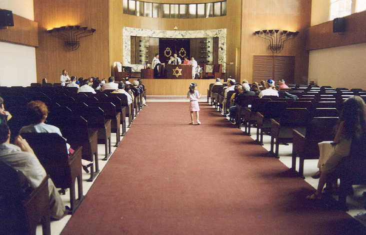
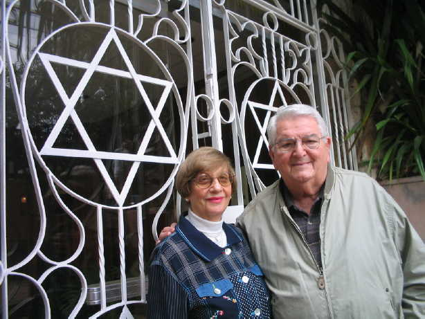

Cuba
Judaica
Five
pages of photographs with personal comments
|
Photos
1
|
(All photos copyrighted
by Richard Smith. No commercial or other use without permission
except by subjects of the photos and their families.)

A good congregation is
required to have at least one child in the aisle at all times.
More than one is better, but services cannot be conducted unless there is
at least one child roaming about.

Adela Dorwin and Dr. Jose
Miller have been sustaining forces in the Patronato,
Havana's Jewish Community Center.